Landscape Toolkit
A library of PostScript procedures that ray-marches mountains, clouds, forests, rivers and the sea, one ray per pixel, in the pscat interpreter. Epic #36 turned a two-picture experiment into a toolkit an artist or an agent can start from.
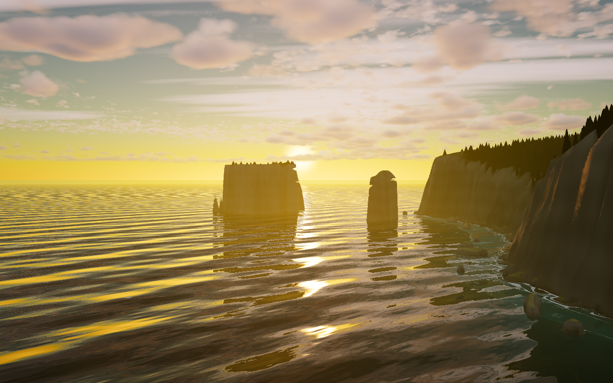
01
Getting started
The toolkit is a set of PostScript files, lib/fc_*.ps, and a few shell scripts around pscat. lib/fc_landscape.ps is the entry point. It loads the sky, clouds, terrain, erosion, forest and water libraries it needs, bakes the erosion and forest maps, and then computes each pixel by marching a ray from the camera through the scene. Nothing in it is a bitmap or a 3D model: the mountains are ridged fractal noise, the clouds are noise densities, and the image is drawn with one PostScript colorimage.
Every setting and hook is listed in docs/settings.md. How the methods work, with diagrams and references, is in docs/techniques.html.
How a piece is built
A piece is one .ps file with three parts, always in this order.
- Settings first. Each one is written as
/Name where { pop } { /Name value def } ifelse, so a-D Name=valueon the command line wins. The libraries keep any value that is already defined, so a setting made after loading is silently ignored. - Then presets and the libraries.
[ /Evening /Clear /Alpine ] fc-presetsfills in whatever the piece left unset, from named groups of settings: time of day, weather, terrain, season, coast and colour grade. Then(lib/fc_landscape.ps) runandW H fc-landscaperender the frame. - Hooks for the rest. Anything settings don't cover, a piece redefines after loading:
fc-landscape-surfacefor the ground's colour,fc-terrain-basefor the shape of the land,fc-pixelto replace the scene entirely.
A real piece: gallery/evening_lake.ps
%!PS-Adobe-3.0
%%BoundingBox: 0 0 320 200
%%Title: Evening lake
% Status: draft
/Seed where { pop } { /Seed 5 def } ifelse
/AA where { pop } { /AA true def } ifelse
/Pitch where { pop } { /Pitch 2 def } ifelse
/Yaw where { pop } { /Yaw -27 def } ifelse
/HFov where { pop } { /HFov 55 def } ifelse
/TerrOX where { pop } { /TerrOX 180 def /TerrOZ 400 def } ifelse
/CamAbove where { pop } { /CamAbove 5 def } ifelse
% the lake: its surface this far above the ground under the camera
/WaterRise where { pop } { /WaterRise 1.4 def } ifelse
/WaterCol where { pop } { /WaterCol [ 0.10 0.15 0.16 ] def } ifelse
% the light, the clouds and the range: time of day, weather, terrain
(lib/fc_presets.ps) run
[ /Evening /Clear /Alpine ] fc-presets
(lib/fc_landscape.ps) run
320 200 fc-landscape
showpageThe same scene as a scene file
% scenes/evening_lake.ps
<<
/Presets [ /Evening /Clear /Alpine ]
/Seed 5 /AA true
/Pitch 2 /Yaw -27 /HFov 55
/TerrOX 180 /TerrOZ 400 /CamAbove 5
/WaterRise 1.4
/WaterCol [ 0.10 0.15 0.16 ]
>> fc-settingsA scene file is one dictionary of settings. scenes/scene.ps renders it at any size or crop, and its output is byte-identical to the piece.
scripts/render.sh -D "Scene=(scenes/evening_lake.ps)" scenes/scene.psRender through scripts/render.sh, which lints and times every run. DPI=36 gives a 160×100 framing pass in a few minutes; -D "Crop=[x0 y0 x1 y1]" renders part of a large frame at full detail; scripts/render_bands.sh splits a large frame across cores.
Using it from another project
Another repo pins a release of the libraries the way this one pins pscat (PR #61). The project keeps the version in .fc-version and a copy of scripts/fetch_fc.sh, which downloads that release with gh, checks SHA256SUMS and installs lib/fc_*.ps plus the docs. In CI, fetch_fc.sh --check fails if anyone edited an installed library by hand.
scripts/fetch_fc.sh 0.1.0 # install, then write .fc-version
scripts/fetch_fc.sh --check # in CIA release is cut by pushing a vX.Y.Z tag. .github/workflows/release.yml then builds a tarball of the libraries, docs/settings.md, a self-contained techniques page and the tested PSCAT_VERSION, and attaches it to a GitHub release. docs/settings.md says which names are public API. The full steps are in docs/using-the-libraries.md, and docs/template-repo-notes.md records the pattern for future ArtColony repos.
No release has been cut yet. The owner tags the first one.
Asking an agent
The repo ships its own Claude Code skill, .claude/skills/fractal-landscape/ (PR #58). It turns a one-line request such as "a misty valley at dusk with a forest" into a piece: pick presets, run a framing pass, check full-detail crops, render in bands, and have Codex critique the result. It also carries the rules that cost hours when forgotten, such as settings before libraries and seeding every piece.
Setup for pscat itself (the pinned release, fonts, the MCP server) is in README.md.
02
What's in the toolkit
Each entry below is one merged pull request. New features are opt-in unless the entry says otherwise, so a change that isn't meant to alter the gallery leaves every piece pixel-identical; scripts/regress.sh checks that on every PR. Times were measured on an Apple-silicon Mac with pscat 0.6.2, usually with other renders sharing the machine, so treat them as rough.
Terrain and erosion
PR #62 · issue #30 part opt-in
Thermal erosion and a far erosion map
ErThermal adds talus. Each pass weathers rock that is steeper than 33° into scree, then moves only the scree downhill, so cliffs stay steep and debris piles up at their feet. ErFar bakes a second, coarser map over 2600 units so distant ranges get eroded valleys too.
Thermal costs about 0.35 s per pass at 512². The far map adds about 15 s of bake. Both stay off: thermal rounds the gallery's horn peaks without a clear gain, and the far map lies beyond what the pieces can see.
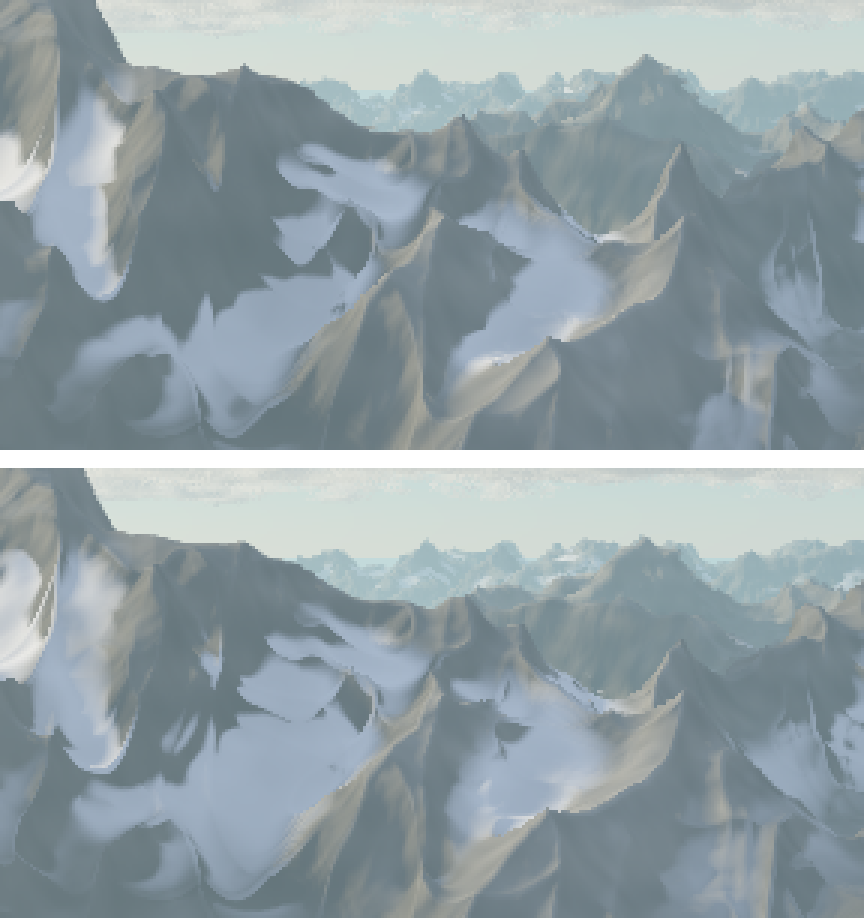
ErThermal 5.PR #63, PR #67 · issue #21 part opt-in
Rock strata, crevices and terraces
Two attempts at rock that reads as fractured. The first shades strata, joints and crevices on steep rock without changing the shape (StrataAmp, CrevAmp). The second cuts dipping, faulted beds into the height itself (TerraceAmp), so silhouettes and shadows see them.
Both lost blind pairwise judging against the plain eroded massif, in both orders, across six rounds. The judge kept preferring soft eroded slopes ("horizontal shelves look mechanically cut"). The terraces cost 44% more render time on a view that is nearly all outcrop.
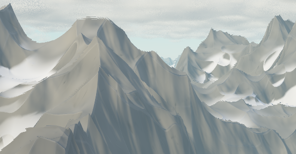
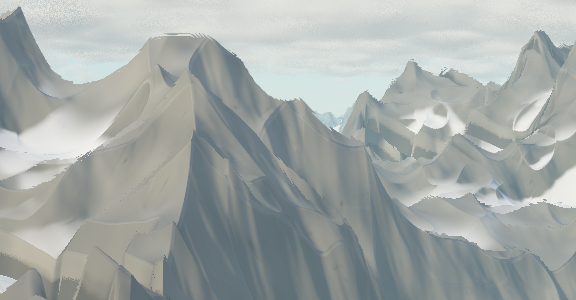
PR #69 · issue #29 closed
Foreground ground cover
GroundOn loads lib/fc_ground.ps, which adds detail only where the pixels are fine enough to show it. Near ground gets five more octaves of roughness and partly buried boulders, both in the geometry. Shading adds pebbles on bare ground, dark shrubs on green ground, and a clumpy grass texture with dry patches.
It won blind pairwise on the Alpine forest meadow in round 1, realism and aesthetics in both orders, and won again on the whole Mountains frame. Five gallery pieces now turn it on. It costs 18% on Mountains at 640×400 and 32% on the meadow crop, which is all near ground.
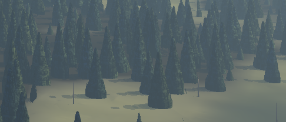
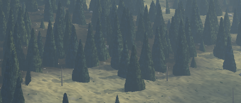
Maps and coasts
PR #50 · issue #13 closed opt-in
Terrain from a map
A piece can lay out its geography and let the fractals fill in the detail. MapOn loads lib/fc_map.ps, which takes a painted character grid and a list of features (/peak, /ridge, /valley, /lake) and bakes them into a table the terrain reads through the fc-terrain-base hook. One map gives several views and a plan from above.
Placed summits landed 10 to 32 units from their marks, within about one ridge wavelength. A height sample costs 57 µs with a map against 43 µs without.


PR #55 · issue #39 closed opt-in
Coastal terrain
MapSea sets a sea level on a map. lib/fc_coast.ps then shapes a wandering coastline, cuts cliffs into high ground, lays beaches with a berm on low land, and deepens the sea floor offshore to a wave-cut bench and an optional reef. New map features add /volcano, /atoll, /cliff and /stack, and MapLiftGrid paints elevation directly.
A height sample costs 82 µs in the coast test scene, against about 57 µs for a map alone.
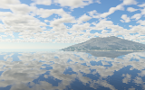
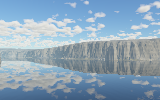
PR #68 · issue #40 closed
Coastal presets: tropical island and Pacific Northwest
Two presets that each set a whole look: light, air, sea, beach and trees. /Tropical brings a high sun, turquoise shallows, a reef the surf breaks on, and palms with curved, leaning trunks. /PNWCoast brings low overcast, sea fog that fills the coves, a grey-green sea, cobble beaches, driftwood, and Sitka spruce and cedar on the cliff tops. Each has a draft gallery piece.
A 640×400 preview took three bands of 1334 to 2050 s (tropical) and 1075 to 1233 s (PNW).
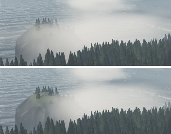
Ocean and water
PR #52 · issue #28 closed opt-in
Lakes, rivers, shores and reflections
lib/fc_water.ps adds a lake plane (WaterY, WaterRise), the lakes drawn on a map (MapWater), and rivers (Rivers). Rivers come from a priority-flood catchment over the eroded map and are carved into it, so the terrain, shadows and forest all see the channels. Shores get wet ground, sand and stones; the water gets ripples that fade with distance and exact reflections with the haze counted from the water.
On Evening lake the library's water costs 4.6% more than the hand-written hooks it replaced.

PR #54 · issue #38 closed opt-in
The sea
Ocean true loads lib/fc_ocean.ps: four waves of swell plus wind chop, colour by depth from turquoise shallows to blue-green deep water, foam on crests, breaker lines that follow the depth contours, a swash line, wet sand with its own reflection, and sun glitter. The waves change only the shading normal; the hit stays on the flat plane, which the PR shows is enough at the tested camera heights.
Stopping the march for the bed just past the surface cut the hit test from 175 s to 128 s on the first preview.


Sky and light
PR #48 · issue #22 closed on by default
An analytic sky
The sky is now computed: single scattering of sunlight in Rayleigh air, a thin aerosol layer and ozone over a curved earth, with a cheap pass for multiple scattering. The sun's direction alone sets the time of day, so SunElev and SunAzim give golden hour, alpenglow and a moonlit night with stars. A piece that picks its own Zenith and Horizon keeps the old hand-blended sky.
This was a deliberate look change for Mountains, Alpine forest and Charted range. It costs 12 to 17% on a Mountains render. Twilight is a known weak spot: dim and purple-grey where real civil twilight is deep blue.

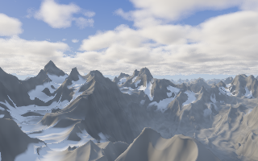
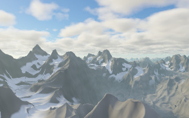
PR #70 · issue #49 closed opt-in
Sun shafts
Shafts true darkens the haze wherever clouds shadow it. Each ray marches its first stretch of air once, probing the cloud shadow at 48 steps, and the haze and sky subtract the shadowed share. Lit haze keeps its old value, so a scene with no cloud shadow renders byte-identical either way.
The result is mostly a dimming of the haze under the clouds, with faint lit bands slanting from the gap round the sun. It adds about 19% of render time.
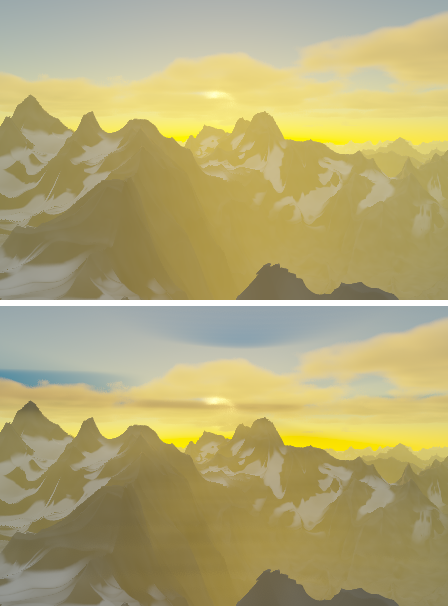
ShaftDark 0.9.Clouds and storms
PR #47 · issue #14 closed opt-in
Cloud types and layered skies
CloudLayers takes a list of layers, each a preset name (/Stratus, /Altocumulus, /Cirrus, /Cumulus, /Nimbostratus) or a dictionary that overrides one. Each layer has its own height band, noise, wind, coverage and optional rain, and casts its own shadow on the ground. A ray marches the bands nearest first and stops once it is opaque.
On a sky crop, an extra thin layer cost about 5 to 10 s per 100k sky pixels; nimbostratus, whose rain lengthens the march, added 40 s over the empty sky.

PR #57 · issue #15 closed
A placed thunderstorm
lib/fc_storm.ps places a cumulonimbus in the scene like a mountain: a leaning tower, a flat anvil drifting downwind, an overshooting dome, a dark base with rain shafts, and virga. It self-shadows from its noise-free outline. The new per-layer keys it needed (Bounds, Probes, LightDepth, RainShafts, RainMask) work for any cloud layer.
The storm's clouds cost 0.21 ms per pixel on the preview. On a crop of the same size the gallery's cumulus cost 0.62 ms per pixel, against 0.29 ms for the storm: most samples in the band are empty air, and the outline test skips them before any noise is computed.

Forests
PR #51 · issue #25 closed on by default
Trunks, forest edges, snags and logs
Trees in a closed stand self-prune and stand on bare trunks, hit exactly by a ray and cylinder test. Trees at the edge keep their branches to the ground. Near crowns get a fine needle texture, and the forest gets standing dead snags and fallen logs. A species table, FsSpecies, makes adding a species one dictionary.
The new forest edge won blind pairwise against the old one in both orders. It costs about 10% on a forest crop. FsTrunks false gives the old forest back pixel for pixel.
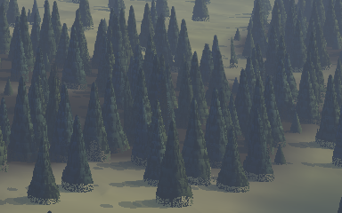
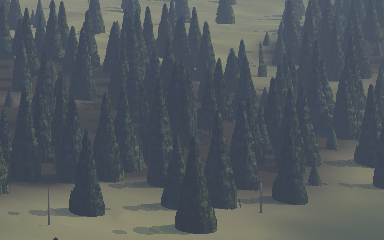
PR #73 · issue #53 closed
Pine and broadleaf crowns
A new crown form, /blob, builds a crown from a core and about ten rounded foliage masses climbing it at the golden angle. Pine becomes a broad cone of pad tiers; broadleaf becomes a lobed dome. Snags now stand only in dense stands, so lone dead trunks no longer stand in meadows like fence posts.
With them, a mixed stand beat the spruce-only stand in blind pairwise: realism 6 of 6, aesthetics 4 of 6. PR #68 added palms, Sitka spruce and western red cedar to the same table.
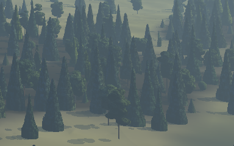
Colour grading
PR #59 · issue #24 closed opt-in
Filmic tone curve and grade presets
ToneCurve /ACES swaps the exponential curve for Stephen Hill's fit of the ACES filmic curve, with deeper shadows and a long roll-off for snow and cloud tops. lib/fc_grade.ps adds white balance, split toning, saturation, a vignette and lifted blacks, all in linear light, with presets such as /Warm, /CoolMuted, /Matte and /SplitTone.
ACES won aesthetics on most blind pairs but realism split by position, which missed the bar set before judging. So it stays opt-in (/Filmic) and the gallery is unchanged.
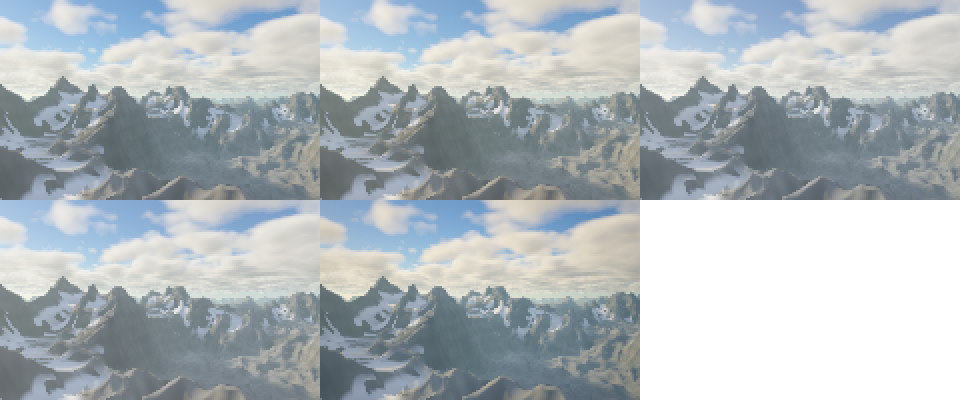
/Warm, /CoolMuted. Bottom: /Matte, /SplitTone with /Vignette.Composition tools
PR #56 · issue #31 closed
Presets and scene files
lib/fc_presets.ps holds 14 presets in four groups: time of day (/Dawn /Noon /Evening /Night), weather (/Clear /Overcast /Storm), terrain (/Alpine /Foothills /Mesa) and season (/Spring /Summer /Autumn /Winter). The precedence is fixed: -D, then the piece, then presets in list order, then library defaults. A new preset is one dictionary entry. Later PRs added the grade and coastal presets.
PR #66 · issue #23 closed
Aim at a map point, frame, sweep
StandAt [x z] and LookAt [x z] place the camera in map coordinates and aim the frame's centre at the ground there; both are marked on the map's plan. scripts/frame.sh renders a quick framing pass with a thirds grid, the eye-level horizon and the aim point drawn on top. render.sh --sweep NAME=SPEC --grid CxR renders a labelled contact sheet of one setting's values. A 2×2 sheet of four seeds took 38 s.
Render passes and placement
PR #71 · issue #33 closed
Passes for compositing into larger works
Pass renders a mask, a depth map, flat material IDs (sky, cloud, rock, snow, forest, water, sand, grass) or a matte for one material. PassKeep keeps passes from the same march, so one page can draw the picture and then place type or art behind the mountains with fc-sky-clip. fc-render also honours translate and scale, so a landscape can be placed in any rectangle of a larger PostScript page.
The demo print took 33 minutes at 144 dpi for its 720×450-pixel landscape. pscat has no masked images, so clipping in PostScript is hard-edged; a soft alpha comes from the mask PNG.
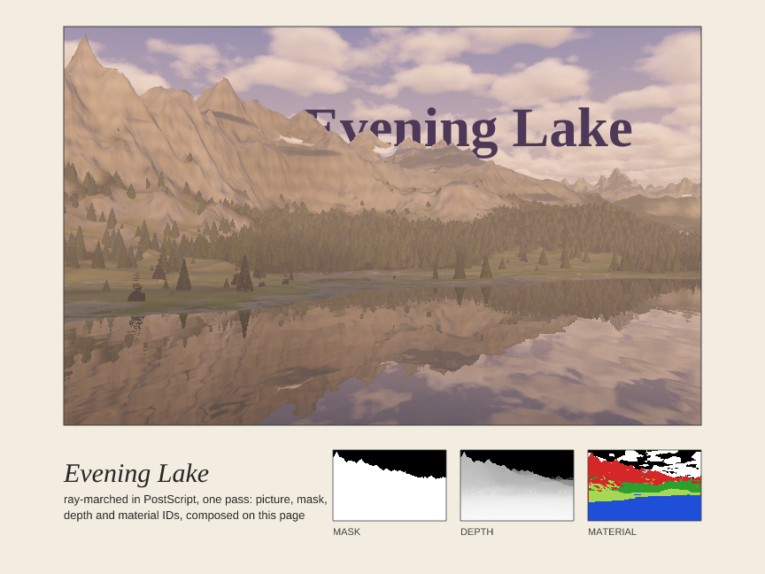
docs/examples/framed_print.ps: one render composed into a print, with the Times title behind the peaks and three passes as insets.Performance
PR #46 · issue #20 closed
A profiler
-D Profile=true wraps the main procedures with a call counter and a stopwatch and prints a table after the render. Its first finding set the agenda for the rest of the performance work: the terrain height function, fc-height, is 70 to 79% of every run.
| piece | render ms | fc-height share | µs / call | calls / px |
|---|---|---|---|---|
| mountains | 39 470 | 70.2% | 41.5 | 50.3 |
| alpine_forest | 81 338 | 74.6% | 46.1 | 89.8 |
| evening_lake | 97 268 | 79.2% | 45.0 | 116.1 |
Everything else is small beside it. The terrain march is 61 to 69% of a render, ground shading 11 to 16% (half of that the shadow march), clouds 1.7 to 8.8%, and sky, haze and tone under 1% together. The profiler's own overhead is about 0.8 µs per wrapped call, 2.2 to 2.6% of these runs.
PR #60 · issue #17 closed
A faster forest march
The crown search now skips a cell early when nothing in it could change the hit, shadow probes skip the search above the tallest possible tree, and species values sit in globals. Every bound is conservative, so the pixels are identical.
| alpine_forest crop, DPI 144 | before | after | change |
|---|---|---|---|
| near crowns, 224×80 | 144.4 s | 121.6 s | −16% |
| mid-distance slope, 256×52 | 129.8 s | 109.7 s | −15% |
PR #64 · issue #19 closed
Bands balanced automatically
pscat runs on one core, so a large frame is rendered as horizontal bands in parallel. render_bands.sh piece --auto N first renders a small probe that records the time of each row, then cuts the frame where the work splits evenly. A per-pixel seed makes the stitched frame identical whatever the cuts.
| cuts | band 0 | band 1 | band 2 | slowest |
|---|---|---|---|---|
| even thirds | 0.9 min | 2.2 min | 4.3 min | 4.3 min |
| --auto 3 | 2.1 min | 2.2 min | 2.5 min | 2.5 min |
PR #72 · issue #18 closed
A cache for the bakes
The erosion and forest bakes are cached in renders/cache/, keyed on every setting, the random stream, the library source and the pscat version. pscat cannot write files, so the bake is printed to stdout as PostScript text and render.sh files it; reading it back with run is exact. Pixels are byte-identical with and without the cache.
| run | without cache | with cache |
|---|---|---|
| a second render | 209.9 s | 78.3 s |
| each of 3 bands | 132 to 137 s | 32 to 40 s |
PR #65 · issue #27 closed
Blue-noise cloud jitter
The cloud march's random start offset now comes from a 64×64 blue-noise tile at the pixel, which pushes the error into high frequencies the eye blurs away. On the storm crop, the blurred grain fell from 0.735 to 0.428 levels at σ 1 (−42%) and from 0.416 to 0.170 at σ 2 (−59%). An exact early exit in the cloud noise paid for it: renders came out 1 to 6% faster. Nothing per pixel draws on the random stream any more, so bands now match a plain whole-frame render.
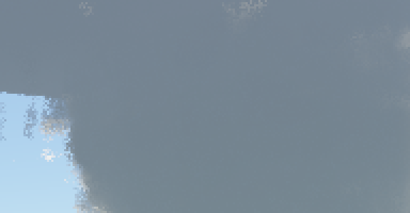
Agent workflow
PR #58 · issue #32 closed
The fractal-landscape skill
A Claude Code skill that takes a one-line request to a finished piece, with a table that maps request words to settings. A fresh agent tested it on "a misty valley at dusk with a forest", given cheap settings and nothing else, and produced docs/examples/misty_valley.ps in four framing passes and one crop. The result is a weak first pass, kept as it came; its stumbles became fixes to the skill.
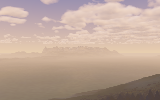
PR #42 · issue #35 closed
Pixel regression in CI, and blind judging
scripts/regress.sh renders every gallery piece at cheap settings plus small full-detail crops and compares them pixel for pixel with stored references; CI runs it on every PR. The references are Linux renders, because seeded renders differ between macOS and Linux. Look changes went through scripts/codex_pairwise.sh: a blind comparison by Codex in both orders, against a bar written down before the first verdict. That protocol is why terraces, strata and filmic tone ship opt-in.
03
Gallery
Every piece in gallery/ is marked % Status: draft. The previews were refreshed at the end of the epic, so they show the current libraries.
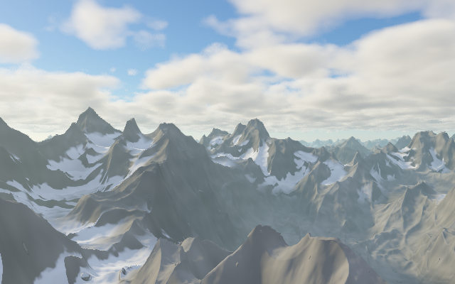
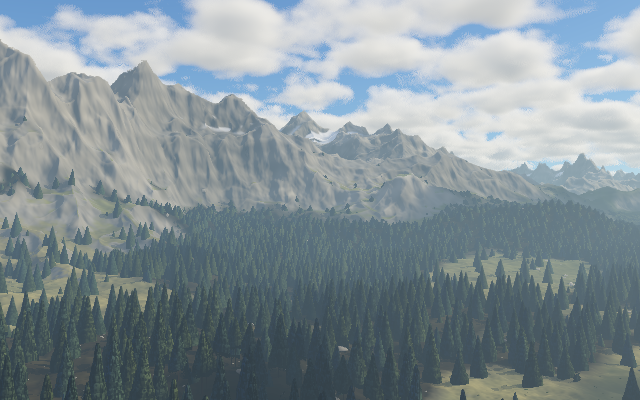
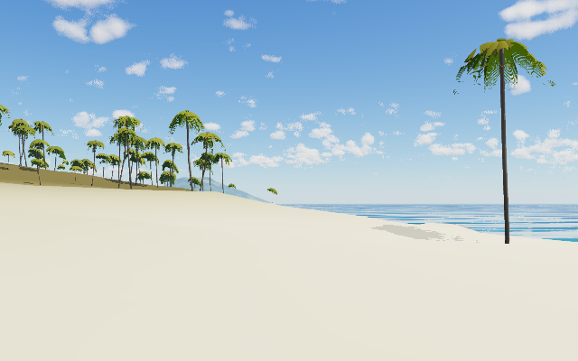
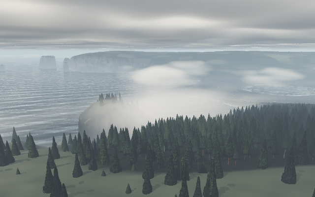
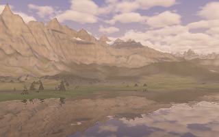
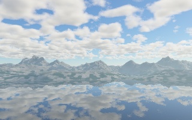
Earlier drafts of Fractal mountains


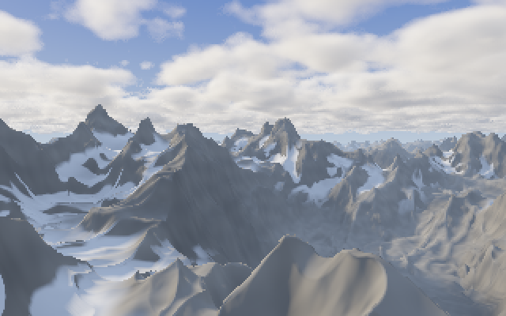
04
Limits and next steps
Where the epic stands
- closed22 issues finished by merged PRs: #13, #14, #15, #17, #18, #19, #20, #22, #23, #24, #25, #27, #28, #29, #31, #32, #33, #38, #39, #40, #49, #53. Pixel regression (#35) came first, before the features. The showcase piece, Golden coast, is PR #75.
- #34open Releases and pinning are merged (PR #61). It closes once the techniques page is published.
- #21open Fractured rock. Strata (PR #63) and terraces (PR #67) are merged opt-in, but both lost blind pairwise. Whether pairwise is the right bar for this issue is an owner call.
- #30open Erosion. Thermal erosion and the far map are merged opt-in (PR #62), but talus reads clearly only from above, and the far map fills basins without cutting channels.
- #26in progress A forest that knows about snow, and snow as geometry.
- #16, #3open Native pscat operators and GPU research. Not started; both wait on pscat (below).
Known look issues
- Golden coast: the water shows regular ripple banding, and the sea stacks look boxy (PR #75).
- Wet sand mirrors the sky onto cliff and stack walls, which then glow even with the sun behind them. Golden coast works around it with
WetSand 0(PR #75). - Narrow map stacks break the march: a
/stacknarrower than about 0.8 of its height shows a floating cap and notched edges (PR #75). - Twilight comes out dim purple-grey; real civil twilight is a deep blue that the cheap multiple-scattering pass doesn't give (PR #48).
- The sea toward a low sun reads cream, because it reflects the horizon. Surf crests can look painted on from a low camera (PR #54).
- Tropical frame needs a reframe: its lagoon and reef are out of frame. The palm trunk's curve doesn't show at preview size, frond edges have specks, far palms show as green boxes, and the foreground sand is empty (PR #68).
- PNW frame: the forest edge against the meadow is abrupt, the fog still has a hard edge in places, and the cobble and driftwood appear only in the second view (PR #68).
- Pine tiers can read as topiary in crowns over about 40 px wide (PR #73).
- The storm's rain curtain doesn't read at small sizes. It has no lightning or shelf cloud and can't share heights with another cloud layer (PR #57).
- Coasts have no arches or undercuts, since the terrain is a heightfield;
/Mesahas no flat summits (PRs #55, #56). - Speed:
fc-heightis still about 60 to 67% of a forest render after PR #60. Cutting it means moving hit points, which the exact-only rule ruled out.
What pscat could add
Logged in docs/pscat-issues.md by entry number, not yet filed upstream.
- Native noise (entry 8). 3D fBm at six octaves costs 12.4 µs in PostScript against 0.25 µs for an empty loop, and noise is the inner loop of
fc-height. pscat --bands N(entry 10). Run N copies, one per band, and composite the pages, so every program gets whatrender_bands.shdoes here.- Array and file output (entries 9 and 15). pscat can't open a file for writing. A
writereals/readrealspair, or writing inside an allowed directory, would retire the cache's stdout workaround. - Masked images (entry 14).
ImageType 3andnulldevicewould let a landscape carry soft alpha within PostScript. - One libm on every platform (entry 13).
atandiffers in the last bit in 88 of 400 samples between macOS and Linux, and erosion grows that into visible changes. A bundled libm would make seeded renders match everywhere.